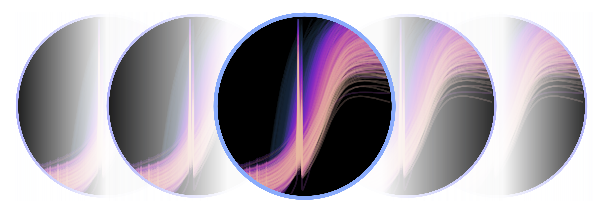

7 - 11 Feburary 2022, Praha Czechia
Welcome to the X-ray Spectral Fitting (XSF) 2022 winter school page.
Information
What?
A week-long winter school designed to teach – from the ground up – the principles of Bayesian X-ray spectral analysis. By covering the fundamentals of X-ray spectral fitting all the way to modern methods with the Bayesian X-ray Analysis (BXA) package, the programme is relevant for any X-ray astronomy researcher interested in advancing their skills in X-ray spectral analysis, with no prior experience required. In addition, the workshop will feature invited seminars from experts currently leading novel and exciting projects that showcase cutting-edge X-ray spectral fitting techniques. The workshop will be useful for any X-ray astronomy researchers interested in using X-ray spectral fitting for their research, including those with no prior experience.Why?
X-ray spectra offer a unique window into the hot and energetic Universe, and X-ray spectral fitting of models is a powerful technique to infer information from observations of astrophysical objects. Finding best-fitting parameters for a given spectral model and dataset(s) however is not a simple task. BXA offers a novel way to do this by connecting X-ray spectral fitting packages to nested sampling algorithms for Bayesian parameter estimation and model comparison with the Bayesian evidence.When?
7 – 11 Feburary 2022Where?
Czechia (exact location TBD)Registration is open!
Please fill out the registration form below.Deadline: 15 January 2022 Cost: free of chargeCode-of-conduct
We have adopted the Royal Astronomical Society Code of Conduct for our workshop. All participants are expected to adhere to this by conducting themselves professionally, respectfully, and collegially throughout. Any issues should be brought to the attention of any of the organisers.Financial sponsor
Registration
Programme
Overview
- Day 1: Introduction the X-ray spectral fitting software Xspec, PyXspec and Sherpa - Day 2: Introduction to the Bayesian X-ray Analysis (BXA) platform - Day 3: BXA tutorial exercises, session 1 - Day 4: More advanced concepts with BXA - Day 5: BXA tutorial exercises, session 2 The full programme will be available soon!Confirmed speakers
• Johannes Buchner - plenary talkContact
Organisers
• Peter Boorman, ASU • Jiří Svoboda, ASU • Norbert Werner, MU • Daniel Kynoch, ASU • Anastasia Yilmaz, ASU • Johannes Buchner, MPE
Social
We plan for a workshop meal and photo. Stay tuned for more information!